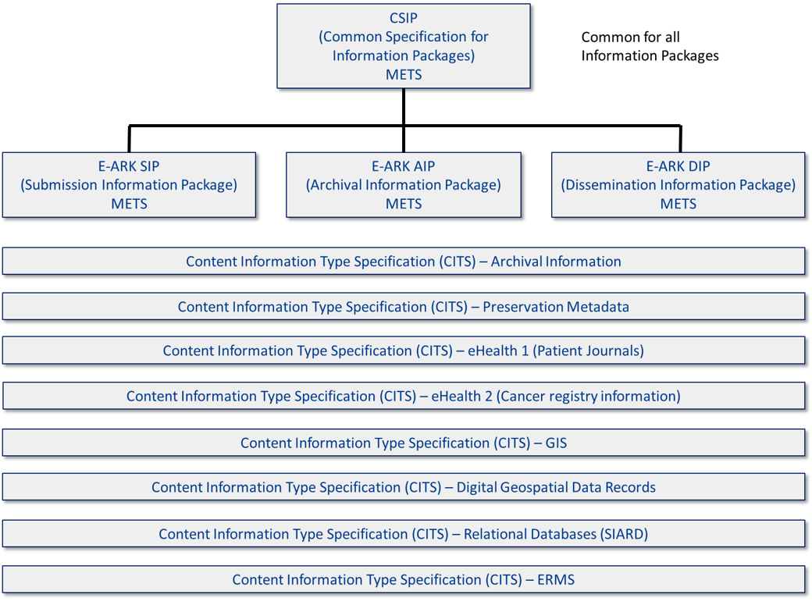

The core of eArchiving is the Information Package specifications. These describe a common format for storing bulk data and metadata in a platform-independent manner, authentic and understandable over the long term. The specifications are ideal for:
migrating valuable long-term data between different generations of information systems,
transferring data to dedicated long-term repositories (such as digital archives), or
preserving and reusing data overextended (and shorter) periods and different generations of software systems.
The layer outside the core is the Content information Type Specifications (CITS). These describe the content itself and ensure that the standards are suitable for transferring the content in a unified way.
The CITS are the specifications that currently are increasing in numbers. The information package specification is undergoing refinement and testing within the project by the team that is creating a validation tool for the information package. A first version of the validation has already been released, but it will be extended with more tests to ensure an information package follows the main specification for information packages.
Figure 4. The eArchiving building block and the different specifications building up a Information Package (2021)
|  |
With these two different types of specifications (all currently based on XML), an information package filled with content can be described and transferred. XML has long been the go-to format for the long-term preservation of information, mainly because it can structure information in a understandable way to both humans and machines. There have been concerns and comments raised regarding Json taking over the role of XML. However, in the archival setting, even if JSon is easier to use as a programmer in the long term, XML wins because of its readable elements and attributes explaining the information or what we call content placed in the document. However, at the same time, XML needs to be used wisely with the correct element and attribute names to facilitate understanding of the human reading of the XML document both now and in the future. There are also other formats used like tiff and pdf, but XML is the format to go to in most cases to reuse the information.